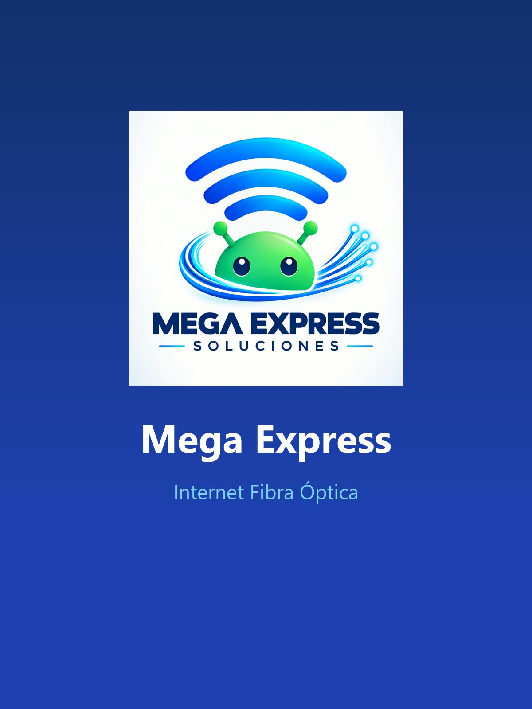
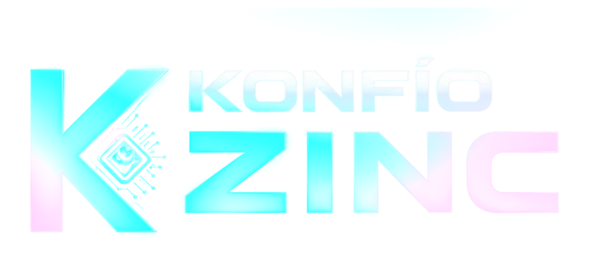
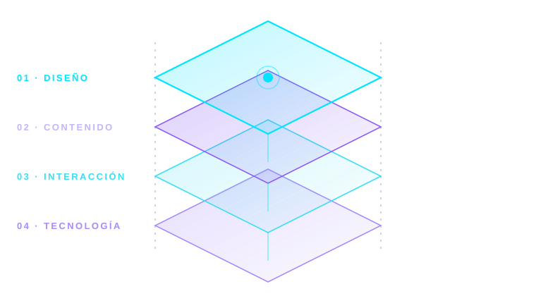
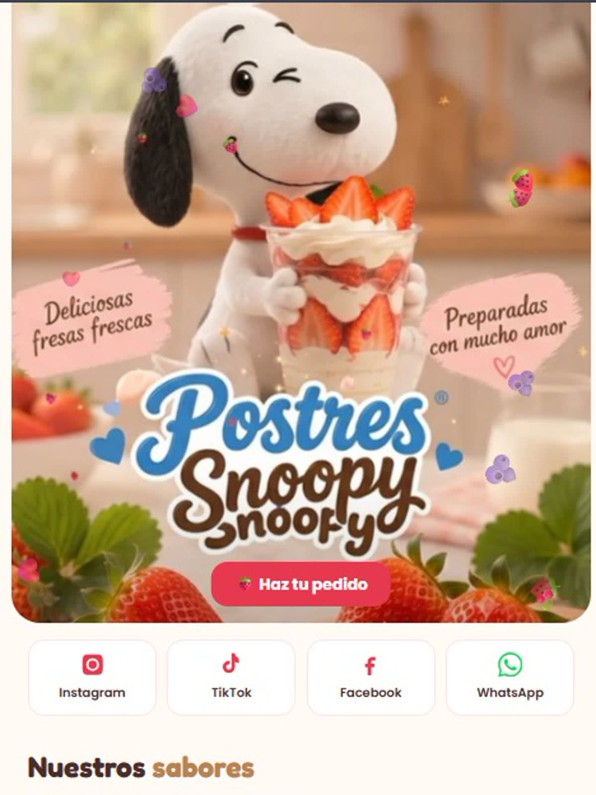
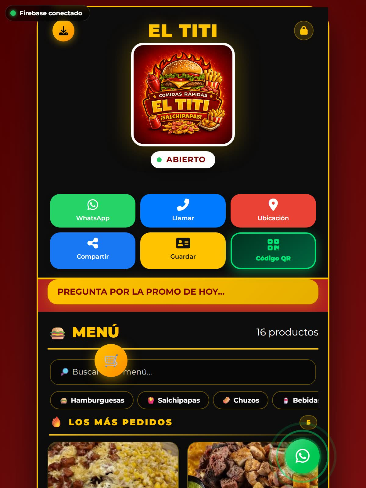
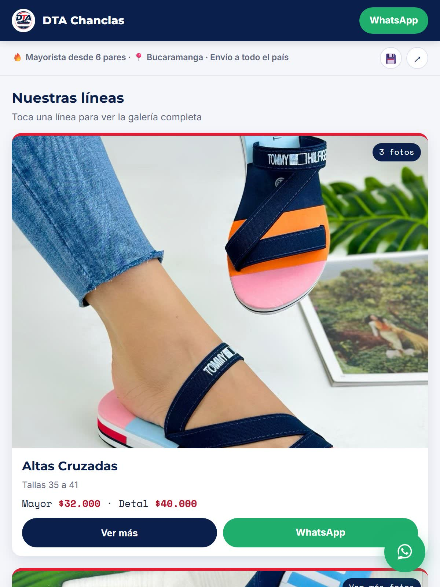
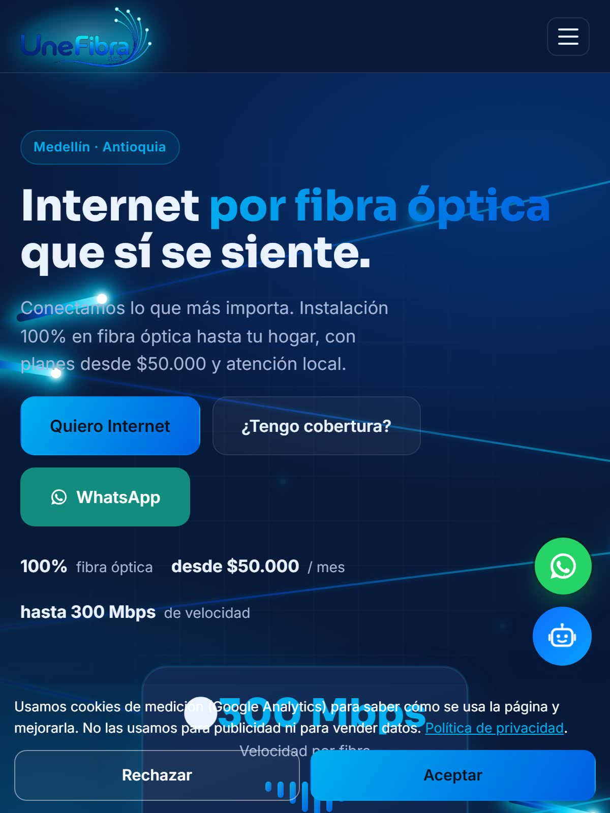
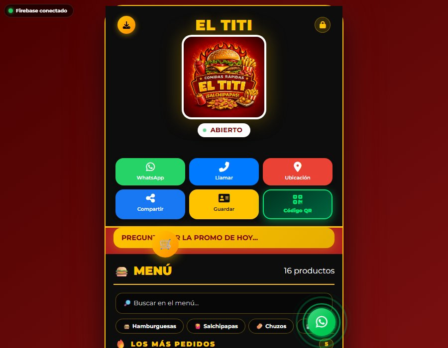
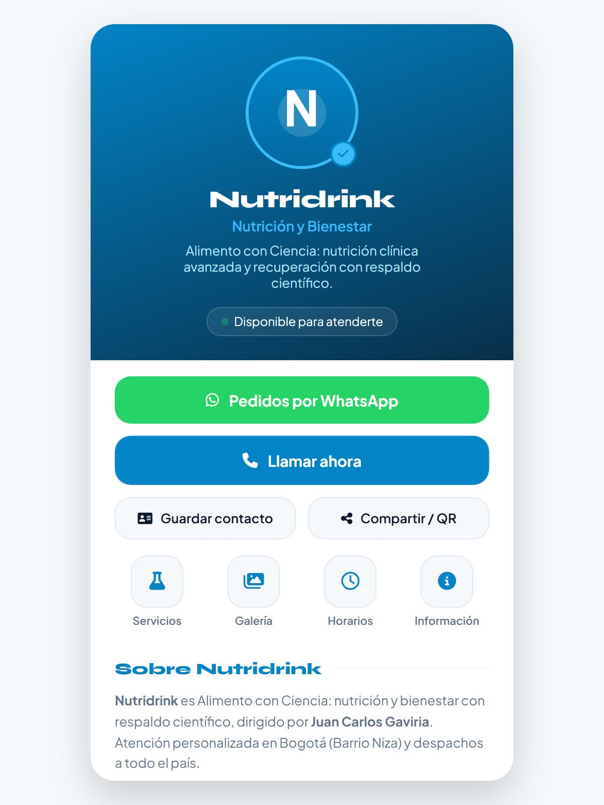

Presencia esencial
Mini Web Básica
Tu negocio claro y listo para compartir: contacto, WhatsApp, redes y ubicación en un solo enlace.
- Contacto y redes
- WhatsApp directo
- Ubicación con mapa
- QR con tu marca
- Dominio el primer año

01 / MANIFIESTO
Diseñamos presencia digital, automatización y experiencias web con criterio, velocidad y código hecho a medida.

Diseño que vende · Tecnología que responde
No hacemos “otra página web”. Construimos un sistema digital que presenta, explica y convierte.
02 / SERVICIOS

Presencia esencial
Tu negocio claro y listo para compartir: contacto, WhatsApp, redes y ubicación en un solo enlace.

Experiencia ampliada
Todo lo de la Básica, más catálogo o menú digital, galería de productos y pedido por WhatsApp.

Venta y consulta
Precios y categorías siempre al día, sin reimprimir: el cliente consulta y pide por WhatsApp.

Venta y consulta
Tu vitrina ordenada por categorías, para que el cliente vea y consulte sin que repitas precios.

Campañas y conversión
Una página enfocada en una sola acción, para que la visita termine en conversación y no en duda.

Puente físico y digital
El paso del mundo físico a tu web en un escaneo, con tu marca en el código en lugar de un QR genérico.

Atención aumentada
Un asistente que responde con la información de tu negocio y sabe cuándo pasar la conversación a una persona.
Cada tarjeta muestra una captura real de un producto publicado, no una maqueta. Los enlaces abren el sitio en vivo; los precios oficiales vigentes están en Precios.
03 / TRABAJO REAL
Explora casos públicos desarrollados para negocios con necesidades, públicos y ritmos diferentes.
04 / POR QUÉ KONFÍO ZINC
Productos definidos, sin mensualidades escondidas en la oferta principal.
Tres meses de garantía y un proceso de entrega que deja claras las responsabilidades.
Elegimos la solución por el problema, con componentes propios y mantenimiento legible.
05 / INVERSIÓN
Valores base en pesos colombianos. Confirmamos alcance, contenido y tiempos antes de iniciar.
* Valores base. Integraciones, contenido adicional y requerimientos especiales se cotizan por separado.
06 / PROCESO
Trabajamos por etapas visibles. El alcance y los tiempos se confirman cuando recibimos la información completa del proyecto.
Entendemos tu negocio, el público y la acción que quieres provocar.
Definimos alcance, contenido, estructura, inversión y criterio visual.
Diseñamos y desarrollamos una versión verificable para revisión.
Probamos móvil, enlaces, contenido y comportamiento antes de publicar.
07 / RECURSOS
08 / PREGUNTAS
Si tu caso necesita otra respuesta, escríbenos. No te mostraremos una solución genérica como si fuera la adecuada para todos.
Es una presencia digital compacta para presentar tu negocio, servicios, contacto y llamados a la acción desde un solo enlace. Hay opciones Básica y Pro.
La oferta principal se entrega mediante pago único. El dominio se incluye durante el primer año en las Mini Webs y su renovación posterior se confirma por separado.
Sí. La operación es remota y tiene cobertura en Colombia mediante WhatsApp y videollamada.
La garantía vigente es de tres meses. El alcance aplicable a tu proyecto queda definido en la propuesta y la entrega.
Después de confirmar alcance, recibir la información necesaria y completar el anticipo acordado.
09 / HABLEMOS
Cuéntanos qué quieres construir. Revisamos el contexto y continuamos contigo por WhatsApp.
konfiozinc@gmail.com